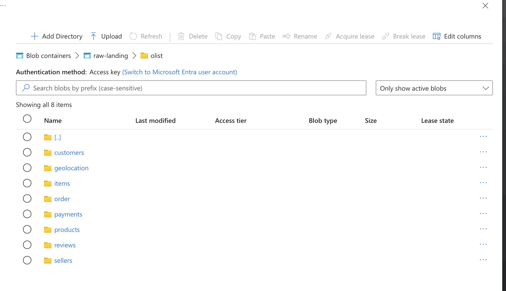

🏗️ System Architecture Overview¶
Portfolio Scenario
This architecture describes a simulated Digital Transformation on the Olist public dataset. Design decisions and controls are documented as production-style patterns.
1. Document Purpose & Scope¶
This document describes the end-to-end system architecture of the Olist Modern Analytics Platform — covering data flow, system boundaries, environment strategy, governance design, and architectural decision rationale.
It intentionally does not cover: column-level semantics (02_data_dictionary.md), business KPI definitions (00_business_requirements.md), data quality scores (03_data_quality.md), DAX measure logic (04_semantic_model.md), or performance benchmark numbers (05_performance_optimization.md).
Target audience: Analytics Engineers, BI Developers, and technical reviewers evaluating platform design maturity.
2. Architectural Principles¶
| Principle | Engineering Reason |
|---|---|
| 🔀 Separation of OLTP and OLAP | Source reads never touch the analytics warehouse — workloads never compete |
| 🔒 Raw data is immutable | Append-only landing zone; full replay and Finance reconciliation always possible |
| 📝 Version-controlled transforms | Every business rule lives in Git — reviewable, rollback-able, auditable |
| ✅ Trust is enforced, not assumed | Data quality validated by 559 automated tests before any downstream consumption |
| 🚫 Fail fast, never silently | CI gates block bad models; no unvalidated code reaches production reports |
| 🔑 Least-privilege by default | Roles grant minimum access required — no shared credentials, no over-permissive grants |
| 💰 Cost-awareness by design | Compute sized to workload; auto-suspend + storage tiers minimize waste |
| 🎯 Single source of truth | Metrics defined once in the semantic layer and reused everywhere — no metric drift |
3. High-Level System Overview¶
3.1 Logical Architecture¶
| Domain | Responsibility |
|---|---|
| Ingestion | Land raw source files into an immutable warehouse zone |
| Storage | Separate compute from storage; enforce schema boundaries |
| Transformation | Apply business logic in version-controlled, tested SQL |
| Consumption | Serve governed, certified metrics through a semantic layer |
| Governance & CI | Enforce quality gates, access control, and deployment rules |
 End-to-end Modern Data Stack: Azure Blob → Snowflake → dbt → Power BI
End-to-end Modern Data Stack: Azure Blob → Snowflake → dbt → Power BI
3.2 Physical Architecture¶
| Layer | Technology | Responsibility |
|---|---|---|
| Ingestion | Azure Blob + COPY INTO |
Idempotent file landing; multi-format (CSV, Parquet, JSON) |
| Warehouse | Snowflake (OLAP) | Separated compute/storage; transient RAW + curated MARTS |
| Transform | dbt Core | Business logic, testing, lineage, documentation |
| BI | Power BI (PBIP + TMDL) | Semantic layer, measures, RLS, self-service consumption |
| CI/CD | GitHub Actions | Two-stage quality gates: lint on push, full build on PR |
| Pre-commit | pre-commit hooks | Hygiene → security → SQLFluff → markdownlint enforcement |
 Snowflake database separation: RAW_DB (immutable) → ANALYTICS_DB (production) → DEV_DB (sandbox)
Snowflake database separation: RAW_DB (immutable) → ANALYTICS_DB (production) → DEV_DB (sandbox)
4. Data Flow Walkthrough¶
4.1 Source → Raw Layer¶
Source files are staged in Azure Blob Storage and loaded into Snowflake via COPY INTO with FORCE = FALSE — ensuring idempotency; files already loaded are skipped automatically. Connectivity uses OAuth 2.0 Storage Integration (not SAS tokens), meaning no credentials are stored in SQL scripts and access is revocable at the Azure IAM level.
File formats are assigned by data characteristics, not convention:
| Entity | Format | Rationale |
|---|---|---|
| Orders, Customers, Sellers, Geolocation, Reviews, Payments, Translations | CSV | Tabular, low-complexity, standard delimiter |
| Order Items | Parquet | Highest-volume fact table (112K+ rows); columnar format reduces scan cost |
| Order Reviews | JSON | Semi-structured review text; Snowflake's PARSE_JSON handles nesting |
The RAW layer is immutable by contract: no transformation, no cleaning, no filtering. Every row lands exactly as received, with three audit columns appended (_loaded_at, _source_file, _load_batch_id). This preserves replay capability and provides a reconciliation baseline. Tables are created as transient — no Time Travel overhead on append-only data that can always be re-loaded from source.
 Azure Blob container structure — source files organized by entity before Snowflake ingestion
{kind=link}
4.2 Raw → Staging¶
!!! abstract "Staging Contract — Three rules that are never broken" - Type casting only — VARCHAR → TIMESTAMP, STRING → NUMERIC, whitespace trimmed, nulls handled - 1:1 mapping to RAW — one model per source table; no joins, no filters, no business logic - Materialized as views — zero storage cost, always fresh from RAW on query
MD5 surrogate keys (`dbt_utils.generate_surrogate_key`) are generated here. Natural source keys preserved as secondary columns for audit and reconciliation.
4.3 Staging → Intermediate¶
Business logic lives here — not in marts, not in Power BI. Logic built once, reused everywhere.
| Logic Applied | Business Problem | Implementation | Critical Constraint |
|---|---|---|---|
| Identity resolution | customer_id is per-order (ephemeral); repeat analysis impossible |
Map → persistent user_sk via ROW_NUMBER() deduplication |
Must run before retention sequencing |
| Retention sequencing | Classify New vs. Repeat at any point-in-time | ROW_NUMBER() OVER (PARTITION BY user_sk ORDER BY ordered_at) |
Empty orders filtered with INNER JOIN valid_orders_list before ranking — they corrupt sequence numbers if not excluded |
| Delivery SLA flag | is_delayed logic would be duplicated across every downstream mart |
CASE WHEN delivered_at > estimated_delivery_at THEN 1 ELSE 0 |
Calculated once; reused in all logistics KPIs |
| Quality compression | 4 boolean flags clutter every downstream schema | Compress to is_verified (1/0) + quality_issue_reason (text) |
Reason values: "Ghost Delivery", "Missing Photos", "Arrival Before Approval" |
| Product enrichment | Category names in Portuguese only; ~610 missing English translations | LEFT JOIN + COALESCE(English, Portuguese, 'Unknown') |
Zero data loss; fallback chain preserves all products |
Materialization by model:
| Model | Materialization | Reason |
|---|---|---|
int_sales__order_items_joined |
Table | Window functions (ROW_NUMBER, DATEDIFF) are expensive; caching prevents re-execution on every mart build |
int_customers__prep |
Table | Deduplication logic; stable dimension source requires consistent output |
int_products__enriched |
View | Simple LEFT JOIN; no performance benefit from materializing |
Intermediate models are built once and reused; complex JOIN and window function logic is not duplicated in marts.
4.4 Intermediate → Marts¶
Why Star Schema (Kimball) at the Marts layer?
BI tools filter on dimensions and aggregate on facts. Star schema is the only modeling pattern that optimizes directly for this access pattern:
- Surrogate keys pre-calculated — no runtime key lookups in DAX
- Grain locked at order-line level — any aggregation yields correct results regardless of filter context
- Conformed dimensions reusable across multiple fact tables
Fact: fct_order_items — incremental table (appends new ordered_at partitions only).
Dimensions (×6): full-refresh tables (Customers, Products, Sellers, Date, Geolocation, RLS).
 Kimball Star Schema — fct_order_items at order-line grain surrounded by 6 conformed dimensions
Kimball Star Schema — fct_order_items at order-line grain surrounded by 6 conformed dimensions
4.5 Marts → Semantic Layer¶
The Final Governance Boundary
Power BI connects exclusively to MARTS via REPORTING_ROLE. RAW and STAGING are never exposed to BI consumers — enforced at the Snowflake RBAC level, not just by convention.
| Capability | Implementation |
|---|---|
| Certified measures | 50+ DAX measures in version-controlled TMDL files — one definition, used everywhere |
| Verified vs. Raw | is_verified flag surfaces clean revenue separately; Finance reconciles without hiding bad data |
| Self-service UX | Columns in Title Case, tooltip overlays (Verified %, At-Risk $), dedicated Documentation page |
| Freshness signal | Dual-timestamp footer (_dbt_updated_at + _source_loaded_at); users know exactly how fresh the data is |
 Power BI semantic model — relationships, measures, and RLS policy in one governed layer
Power BI semantic model — relationships, measures, and RLS policy in one governed layer
5. Environment Strategy (Dev / CI / Prod)¶
| Environment | Purpose | Data | Protection |
|---|---|---|---|
| DEV | Feature development & iteration | OLIST_DEV_DB (sandboxed) |
No business users; full developer access |
| CI | Automated PR validation | Ephemeral CI_PR_<n> schemas |
Auto-created per PR, auto-dropped post-merge |
| PROD | Business consumption | OLIST_ANALYTICS_DB |
Locked; promotion requires CI pass + sign-off |
CI pipeline is two-stage by design — balancing speed for developers with rigour for production:
| Stage | Trigger | What Runs | Duration | Purpose |
|---|---|---|---|---|
| Stage 1 | Push to feat/** |
SQLFluff lint + dbt parse (no Snowflake connection) |
~45s | Fast syntax feedback before PR |
| Stage 2 | PR to main |
Full dbt build — all 35+ models + 559 tests against live Snowflake |
~8–12 min | Production-equivalent validation |
Stage 2 runs against an ephemeral CI_PR_<number> schema created automatically per PR in OLIST_DEV_DB and dropped post-merge, ensuring zero shared state between concurrent PRs.
Power BI workspace promotion follows the same discipline: changes are built and validated in Olist Analytics [DEV]; Finance revenue reconciliation and RLS validation are required before promoting to Olist Analytics [PROD] — the certified dataset serving the Org App with scheduled refresh and email subscriptions. No direct editing is permitted in PROD.
 DEV workspace for iteration → PROD workspace for certified, governed consumption
DEV workspace for iteration → PROD workspace for certified, governed consumption
6. Data Modeling Strategy¶
Why Medallion Architecture? Separating RAW → STAGING → INTERMEDIATE → MARTS enforces a strict contract at each boundary. Business logic is changed in one place (intermediate) without touching source contracts; marts change without affecting raw data replay.
Why Kimball Star Schema? BI query patterns filter on dimensions and aggregate on facts. Star schema optimizes for this: fewer joins, predictable performance, and a clear grain definition that prevents double-counting.
Grain consistency: Every fact row represents exactly one order line item. Any aggregation yields correct results regardless of filter context.
Surrogate key strategy: All PKs in staging and marts are MD5 surrogate keys generated via dbt_utils.generate_surrogate_key(). Natural source keys are preserved as secondary columns for audit and reconciliation.
Slowly Changing Dimensions: Customer addresses are handled via latest-address selection in the intermediate layer (ROW_NUMBER() + rn = 1 filter). No SCD Type 2 — the dataset is historical and static.
7. Governance by Design¶
Governance is not a retrofit — it is designed into every layer:
| Layer | Governance Control |
|---|---|
| RAW | Immutability + audit columns (_loaded_at, _source_file, _load_batch_id) |
| dbt Tests | 559 blocking tests — not_null, unique, relationships, accepted_values, singular |
| dbt Contracts | Schema contracts enforce column presence and data types — breaking changes fail CI |
| CI Gates | Failed tests block PR merge — no unvalidated code reaches production |
| Semantic Layer | Metrics defined once in TMDL; [Total Revenue] has one definition reused everywhere |
| RLS | Power BI Bridge Table restricts regional managers to their own State/Region at login |
| RBAC | Four Snowflake roles (LOADER / ANALYTICS / REPORTER / CI_SERVICE) — least-privilege |
| BPA | Tabular Editor BPA — 50+ rules, 0 issues enforced before every PROD deploy |
| Source Freshness | 8 sources monitored with tiered SLA windows (1–30 days); stale data flagged in CI before users see it |
| Heartbeat Table | meta_pipeline_heartbeat — dual-clock freshness signal (_dbt_updated_at + _source_loaded_at); Power BI footer shows both timestamps so users know exactly how fresh the data is |
| PBIP + TMDL | Power BI stored in PBIP + TMDL format (plain text, not binary .pbix); every DAX measure change is PR-reviewable, diff-able, and Git-tracked |
 dbt schema contracts — column presence and type enforcement at model level
dbt schema contracts — column presence and type enforcement at model level
 4-role Snowflake RBAC hierarchy — separation of loading, transformation, and reporting duties
4-role Snowflake RBAC hierarchy — separation of loading, transformation, and reporting duties
8. Performance Architecture¶
Benchmark numbers (load times, visual render times, refresh durations) live in 05_performance_optimization.md. This section covers decisions only.
| Decision | Problem Solved | Architecture Impact |
|---|---|---|
| Import Mode over DirectQuery | DirectQuery adds warehouse spin-up + network latency on every filter click | VertiPaq in-memory engine delivers sub-2s interactions, independent of Snowflake state |
Incremental refresh on fct_order_items |
Full reload of 112,650 rows = 45+ min refresh windows, blocking hourly schedules | Only new ordered_at partitions appended → 8 min refresh, hourly windows enabled |
| Star schema pre-calculation | Flat/denormalized tables force DAX to scan more columns per query | VertiPaq column compression maximized; only referenced columns scanned per query |
| Query folding enforced | Un-folded M code re-processes data in Power BI engine during refresh | Fold-compatible transforms push joins and filters back to Snowflake, reducing transfer volume |
 Incremental refresh policy — only new partitions processed per refresh cycle
Incremental refresh policy — only new partitions processed per refresh cycle
 Query folding confirmed — transformations pushed to Snowflake during import refresh
Query folding confirmed — transformations pushed to Snowflake during import refresh
 dbt incremental materialization — fact table appends new
dbt incremental materialization — fact table appends new ordered_at partitions only
9. Cost-Aware Architecture (FinOps View)¶
Three purpose-built warehouses — each sized and suspended independently; no idle cost cross-contamination between workloads:
| Warehouse | Size | Auto-Suspend | Used By |
|---|---|---|---|
LOADING_WH_XS |
X-Small | 60 s | Azure → Snowflake COPY INTO ingestion |
TRANSFORM_WH_XS |
X-Small | 60 s | dbt runs (dev, CI, scheduled prod) |
REPORTING_WH_XS |
X-Small | 60 s | Power BI Import refresh only |
FinOps decision log:
| Decision | Implementation | Cost Outcome |
|---|---|---|
| Hard spend ceiling | Resource Monitor — 100 credit/month cap, all warehouses combined | Prevents runaway CI or misconfigured refresh schedules |
| Transient RAW tables | TRANSIENT = 0 days Time Travel on immutable, re-loadable data |
Eliminates Time Travel storage cost on the largest schema |
| Standard ANALYTICS/DEV tables | Full Time Travel enabled where data mutation is possible | 90-day rollback capability for production and dev environments |
| Azure Blob tiering | Hot → Cool → Archive lifecycle policy on last-access time | ~60% storage cost reduction on source files |
| ELT over ETL | Transform inside Snowflake — no external VM, no Spark cluster | Zero always-on infrastructure cost outside scheduled refresh windows |
| STAGING as views | No storage materialized for the 1:1 interface layer | Only INT and MART tables incur storage, where materialization earns its cost |
 X-Small warehouses with 60-second auto-suspend — cost discipline at infrastructure level
X-Small warehouses with 60-second auto-suspend — cost discipline at infrastructure level
 Azure Blob lifecycle policy — Hot → Cool → Archive tiering on source files
Azure Blob lifecycle policy — Hot → Cool → Archive tiering on source files
10. Architecture Decision Log (ADR)¶
ADR Overview
Six decisions that define the architecture. Each follows: Problem → Decision → Alternatives → Trade-offs.
| ADR | Decision Made | Key Trade-off |
|---|---|---|
| ADR-01 | Snowflake over Postgres | Cost discipline required → mitigated by auto-suspend + Resource Monitors |
| ADR-02 | dbt Core over raw SQL | Naming conventions required → enforced by SQLFluff + CI gates |
| ADR-03 | Import Mode over DirectQuery | Not real-time → daily refresh acceptable for business reporting cadence |
| ADR-04 | "Trust, Don't Trash" data quality | Semantic model manages both clean/dirty rows → explicit [Verified Revenue] + [At-Risk Revenue] measures |
| ADR-05 | RLS in Power BI, not Snowflake | BI-layer control → warehouse access remains strictly read-only for REPORTER_ROLE |
| ADR-06 | PBIP + TMDL over .pbix binary |
Requires Desktop June 2023+ → enforced in project onboarding docs |
ADR-01: Snowflake over Postgres for Analytical Workloads¶
- Problem: The OLTP system (Postgres) could not serve both transactional writes and analytical reads without performance degradation and production risk.
- Decision: Dedicated Snowflake OLAP warehouse, physically separated from the source system.
- Alternatives considered: DuckDB (no cloud sharing), BigQuery (no Azure alignment), Redshift (AWS dependency).
- Trade-offs: Requires cost discipline — warehouse sizing and auto-suspend. Mitigated via Resource Monitors and X-Small defaults.
ADR-02: dbt Core over Raw SQL Scripts¶
- Problem: Ad-hoc SQL scripts have no dependency management, no testing framework, no lineage, and no documentation output.
- Decision: dbt Core — SQL-first, test-native, with automatic lineage DAG and
dbt docsgeneration. - Alternatives considered: Python + pandas (non-SQL, harder for SQL-native BI teams), Dataform (Google Cloud dependency).
- Trade-offs: Requires strict naming conventions and testing discipline. Enforced via
.sqlfluffconfig and CI blocking gates.
ADR-03: Power BI Import Mode over DirectQuery¶
- Problem: DirectQuery introduces warehouse spin-up latency and network round-trips on every dashboard filter interaction.
- Decision: Import Mode with incremental refresh on the fact table. Data pre-loaded into VertiPaq; visual interactions render sub-2s.
- Alternatives considered: DirectQuery (real-time but slow), Composite Models (complex, higher error surface), Python-only dashboards (no self-service).
- Trade-offs: Data refreshes on a schedule, not real-time. Acceptable for daily business reporting; not appropriate for operational live-data dashboards.
ADR-04: Verified vs. Raw Design ("Trust, Don't Trash")¶
- Problem: Bad rows (negative prices, impossible dates, missing photos) exist in source data. Silently deleting them destroys auditability and breaks Finance reconciliation.
- Decision: Flag every row — never delete. Apply
is_verified(1/0) andquality_issue_reasonin the intermediate layer. Surface both Verified Revenue and Revenue at Risk in the semantic layer. - Alternatives considered: Hard-delete bad rows in staging (destroys auditability), filter in Power BI only (silent undercounting), separate clean/dirty tables (doubles maintenance burden).
- Trade-offs: Semantic model must handle both verified and unverified rows. Mitigated by dedicated measures:
[Verified Revenue]and[At-Risk Revenue].
ADR-05: Power BI RLS over Snowflake Row Access Policies¶
- Problem: Regional managers should only see data for their own State — this control could live at the warehouse or the semantic layer.
- Decision: Power BI RLS via Bridge Table (
dim_rls_mapping). Dynamic RLS evaluatesUSERPRINCIPALNAME()at report load and restricts all visuals automatically. - Alternatives considered: Snowflake Row Access Policies (requires per-user warehouse credentials — impractical for a shared Org App dataset), separate reports per region (unsustainable maintenance at scale).
- Trade-offs: RLS lives in the BI layer, not the warehouse. Mitigated by
REPORTER_ROLEbeing strictly read-only on marts; business users have no direct warehouse access.
ADR-06: PBIP + TMDL over .pbix Binary Format¶
- Problem:
.pbixis a binary format — DAX measure changes, relationship edits, and RLS rule modifications produce unreadable Git diffs. Code review of BI layer changes is impossible. - Decision: Power BI stored in PBIP (Power BI Project) + TMDL (Tabular Model Definition Language) — plain-text format where every measure, table, and relationship is a reviewable
.tmdlfile. - Alternatives considered:
.pbixwith binary Git storage (no review capability), keeping DAX only in Power BI Service (no version control at all). - Trade-offs: Requires Power BI Desktop (June 2023+) and the TMDL preview feature. All team members on compatible versions — enforced in project docs.
Related docs: 00_business_requirements.md • 02_data_dictionary.md • 03_data_quality.md • 04_semantic_model.md • 05_performance_optimization.md • 06_engineering_standards.md